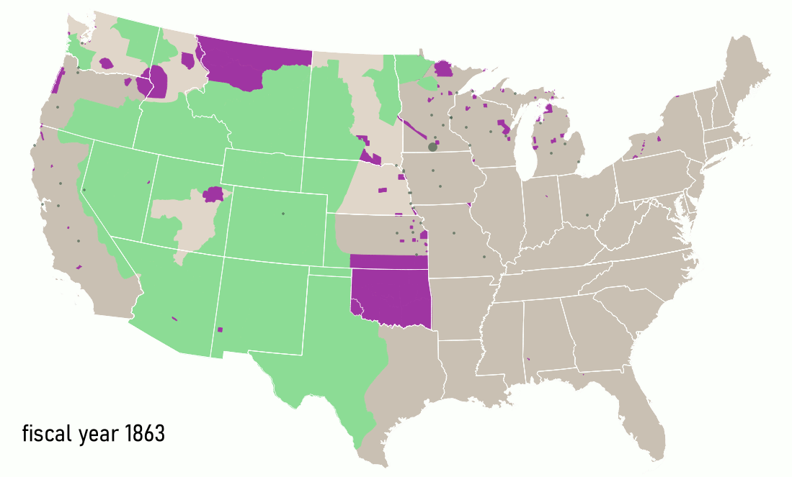
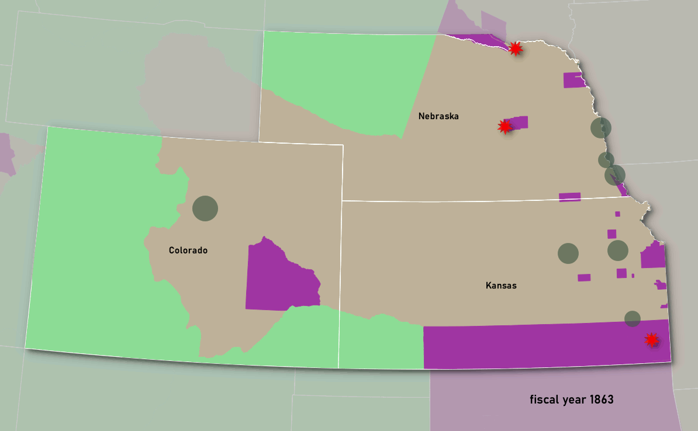

Projects
Much of my historical work has focused on the nineteenth century United States,
specifically western expansionism, settler colonialism, as well as Indigenous resistance and
accommodation. More recently, I have added a stronger transnational and European focus, asking how
actors and cultural understandings from abroad were shaped by and influenced events on the frontier.
Ever since I tried my hands at creating illustrative maps for the book-version of my dissertation
(Settlers as Conquerors, Stuttgart 2018), I have become fascinated by the potential of using
Geographic Information Systems (GIS) for presenting and analyzing historical sources. A fair share of my
current work concentrates on the conceptual side of using GIS within history.
Land Acquisition and Marginalization in the US West and South, 1863-1934
My current research examines how democratic reforms in the post-Civil War era influenced colonization processes in the U.S. West. Specifically, I am interested in how expanded notions of civil rights, which at the level of the law claimed to include previously enslaved African Americans and previously rightless Indigenous people, changed the shape of colonization. It is well known that reforms such as the anti-discrimination amendment to the Homestead Act of June 1866, the Fourteenth Amendment to the U.S. Constitution of 1868, and the General Allotment Act (Dawes Act) of 1887 by no means led to legal, let alone social, equality. I want to trace how these laws and other reforms reconfigured the processes of displacement and resettlement in the U.S. West. My temporal focus is on the broad period from the end of the Civil War to the Great Depression.
Central to my analysis is the Homestead Act of 1862, which serves as a case study for understanding the impact of these reforms. I trace how settlers appropriated land using new settlement statistics from the General Land Office, which I have digitized at the National Archives in Washington, DC. Georeferencing and timing this data in GIS allows a closer look at settlement processes in combination with local economic, social, and ecohistorical developments.
The maps below visualize the number of land applications (grey bubbles) alongside the take-over of unceded Native territory (green) and the constant reduction of Native reservations (purple). The subsequent opening of reservations to homestead settlers (as a result of the Allotment Act of 1887) is indicated by the purple becoming transparent.

This large map for 1863 to 1912 illustrates a generally close chronology Indigenous displacement and homestead settlements. Throughout the Great Plains and Far West, homesteaders claimed land shortly after it was taken from Native nations under treaties and executive orders.

In this map of Colorado, Kansas, and Nebraska between 1863 and 1891, I have added as another data point frontier clashes (red stars) of settlers and/or the army with Arapaho, Cheyenne, and occasionally Lakota. As can be seen, these clashes occurred in areas that in the U.S. government’s interpretation had been “ceded” and were thus opened to homesteaders. “Land cessions” such as those under 1861 and 1867 treaties for western Kansas and Nebraska, however, did not result from true treaty negotiations, but used fraudulent promises and misrepresented treaty documents to obtain signatures from Native leaders. A side product of this arrogant approach was a significant overlap in claims and many direct clashes of homestead settlers with Natives who had never agreed to leave.
Georeferenced statistics and compilations with other maps serve my project in showing patterns in the data that allow me to ask new questions. At the same time this data was used to create a new map for the historical atlas American Panorama in a collaboration with Robert Nelson and Justin Madron of the University of Richmond’s Digital Scholarship Lab. The resulting interactive web map explores the relationship between Indigenous dispossession and land appropriation under the Homestead Act from 1863 to 1912.
I provide a detailed context of the displacement caused by the Homestead Act during the first decades of the law’s operation in an article for the Bulletin of the German Historical Institute Washington. The article compares the Homestead Act with predecessor laws of the antebellum era and shows how my data enables a new critical analysis. For a discussion of methods used, see this blog-post.